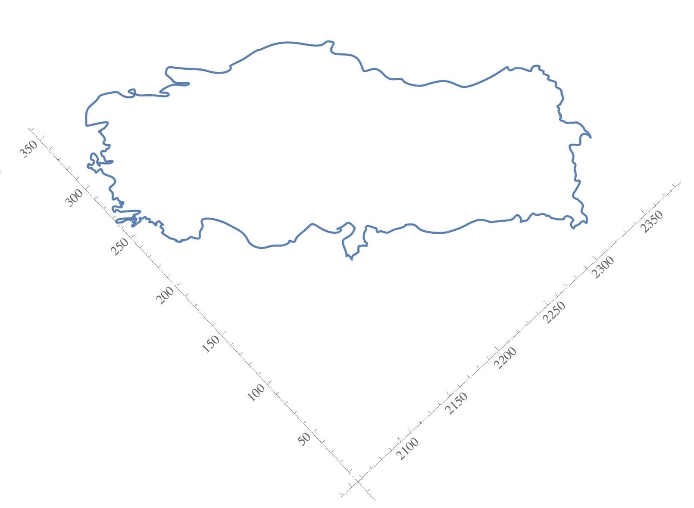
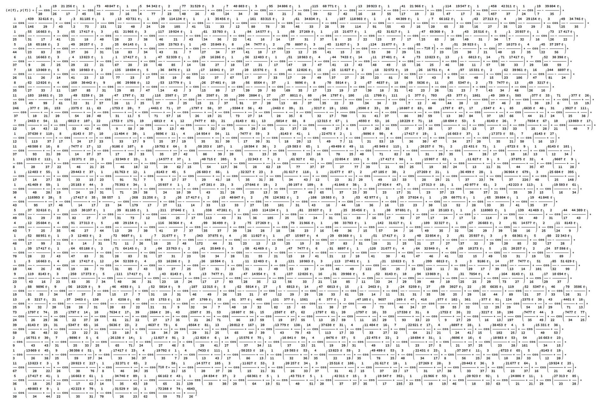

29 Ekim Cumhuriyet Bayramı’mız kutlu olsun!
Günün anlamına yönelik ekte Türkiye’nin anadolu parçasının koordinat sisteminde parametrik bir fonksiyon olarak grafiği var Avrupa yakası fonksiyonun sürekli olması gerektiği için yok, başka bi anlam yüklemeyin.
Matematikte fonksiyonlar her verilen girdi için yalnız bir sonuç veren bağıntılardır. Örneğin, bana hangi rakamı söylerseniz o rakamın karesini söylersem, size fonksiyonluk yapmış olurum Çünkü her rakamın sadece bir karesi vardır bu yüzden bana bir rakamı söylediğinizde aslında ben cevap vermeden dahi ne söyleyeceğimi bilebilirsiniz. Fakat her bağıntı böyle olmak zorunda değil. Örneğin eğer bana söylediğiniz rakamın karesini değil de kare kökünü söylüyorsam her söylediğiniz rakam için iki tane farklı cevaptan birini verebilirim, bu yüzden de ben söylemeden ne diyeceğimi bilemezsiniz. Örneğin bana 4 dediğinizde iki de diyebilirim eksi iki de. Bu sebeple vereceğim cevaplar sınırlandırılmadığı sürece karekök alma fonksiyon olmayacaktır (Sadece pozitif sayılar söyleyebilirsin diye bir koşul koyarsanız, karekök almam da bir fonksiyon olacaktır).
Aşağıdaki grafik de iki koordinatı iki farklı fonksiyondan oluşan bir "parametrik fonksiyondur". Koordinatlar doğrudan birbirlerinin fonksiyonu olsalardı sıradan bir fonksiyon olurdu. Fakat x koordinatı da y koordinatı da ayrı bir parametrenin, t parametresinin, fonksiyonu. Böyle fonksiyonlara da parametrik fonksiyon diyoruz.
Bu grafik Mathematica ile çizilmiştir, kodu şuradan ücretsiz indirebilirsiniz: http://demonstrations.wolfram.com/CountryCurves/.
Eğitimi ve bilimi görselleştiren bu tarz imkanlardan faydalanmak için bir programlama dili öğrenmenizi şiddetle tavsiye ederim
İlgilenenler için "Türkiye" parametrik fonksiyonu ekteki diğer resimde.
Ülke sınırları düzgün olsun deyince tabi fonksiyon da uzun oluyor
 